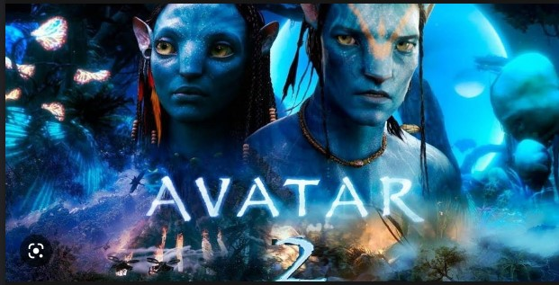
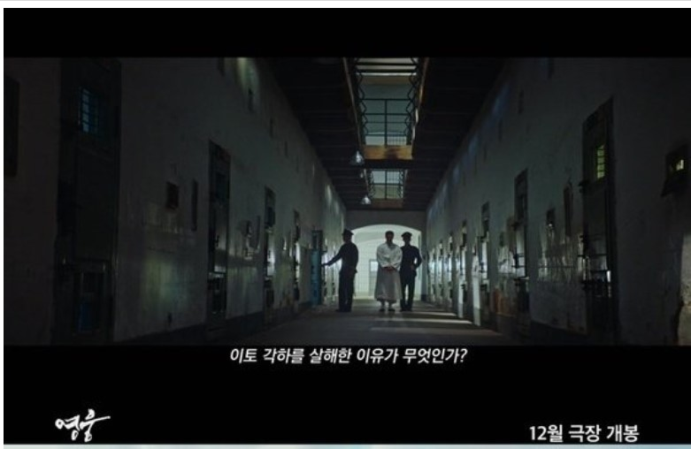

이것은 이미지가 왼쪽정렬하거나, 오른쪽 정렬하는 방식을 나타 냅니다
 여름에 이어 극장가 최대 성수기로 꼽히는 12월 연말을 맞아 기다리고 기다리던 대작들이 등판한다. 전 세계적인 기대를 한 몸에 받고 있는 '아바타: 물의 길'(이하 '아바타2')과 영화 '영웅'이 개봉해 빅매치를 벌이는 것. '아바타2'는 오는 14일, '영웅'은 오는 21일 일주일 간격을 두고 관객들을 만날 예정이다. '아바타2'는 판도라 행성에서 '제이크 설리'와 '네이티리'가 이룬 가족이 겪게 되는 무자비한 위협과 살아남기 위해 떠나야 하는 긴 여정과 전투, 그리고 견뎌내야 할 상처에 대한 이야기를 그린 영화로, 지난 2009년 혁신적인 기술력으로 신드롬(증후군)을 일으키며 월드와이드 역대 흥행 순위 1위를 기록한 '아바타'의 후속편이다. 전편에 이어 제임스 캐머런 감독이 13년 만에 선보이는 신작이기도 하다.
 일주일 뒤 개봉하는 '영웅'은 동명의 오리지널 뮤지컬을 영화화한 작품으로, 1909년 10월 하얼빈에서 이토 히로부미를 사살한 뒤 일본 법정의 사형 판결을 받고 순국한 안중근 의사(정성화 분)가 거사를 준비하던 때부터 죽음을 맞이하던 순간까지, 잊을 수 없는 마지막 1년을 그린다. 윤제균 감독이 1000만 영화 '국제시장' 이후 8년 만에 선보이는 신작으로도 많은 관심을 받고 있다.